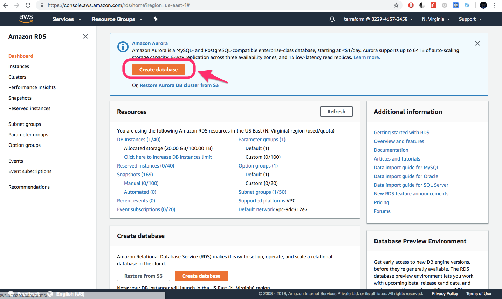
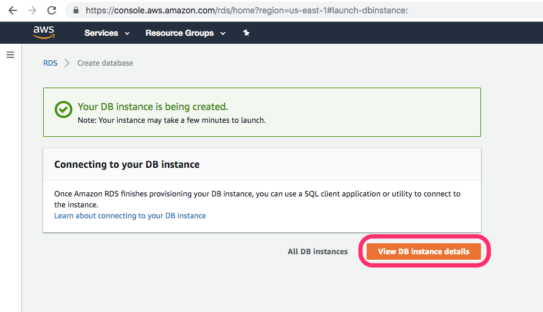

Data Source
Data sources are read only information that Terraform can get from Provider's API. When we use data source, Terraform doesn't create/modify anything. It just queries the API, so that the data can be used by other resources.
Let us create a RDS DB manually and we will refer to it in our manifest.
Creating RDS DB
-
Go to RDS service page. 
-
Select MySQL DB Engine.

-
Provide the DB instance the following name and enter some complex password.

-
Provide the following network settings for the instance.

-
Provide your DB a name and disable IAM authentication.

-
Leave all other values to default and create the DB. 